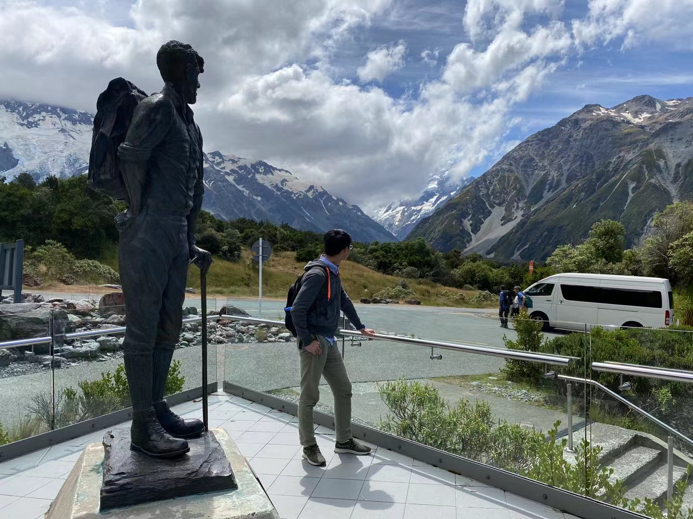
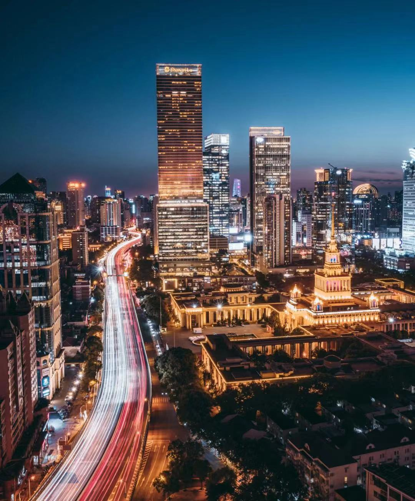
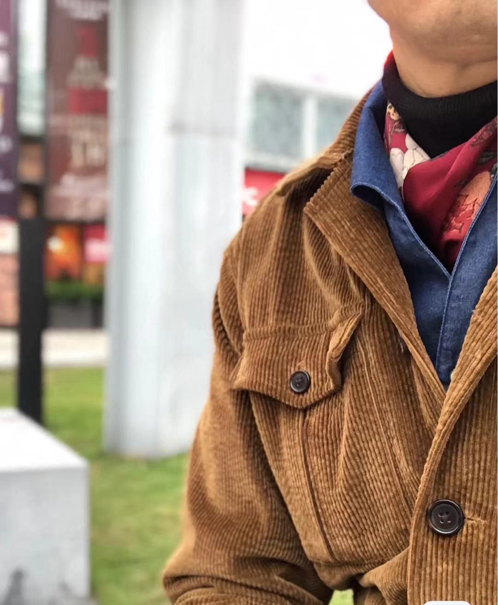
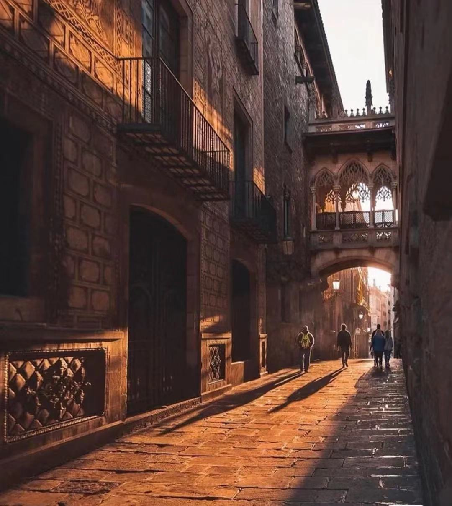

I enjoy building multilingual travel content. In the following section, I share the same message in several languages.
Hi everyone, I am Project Maintainer. This website is an open-source static Web project focused on UK travel discovery. Thanks for exploring the pages and trying the interactive modules. I will continue to improve information architecture, media performance, and usability. If you find any issue or have ideas for better content organization, please share feedback by e-mail. Community input helps this project evolve in a practical direction.
Bonjour a tous, je suis Project Maintainer. Ce site est un projet Web statique open-source consacre au voyage au Royaume-Uni. Merci d'explorer les pages et de tester les modules interactifs. Je vais continuer a ameliorer l'architecture de l'information, les performances media et l'utilisabilite. Si vous remarquez un probleme ou si vous avez une idee d'amelioration, contactez-moi par e-mail. Les retours de la communaute font progresser ce projet.
こんにちは。Project Maintainerです。このサイトは、英国旅行情報をテーマにしたオープンソースの静的Webプロジェクトです。 ご覧いただきありがとうございます。今後も、ナビゲーション設計、メディア表示、使いやすさを継続的に改善していきます。 気づいた点や改善提案があれば、ぜひメールでお知らせください。コミュニティからのフィードバックが、プロジェクト品質の向上につながります。
Hallo zusammen, ich bin Project Maintainer. Diese Website ist ein open-source Static-Web-Projekt rund um Reisen im Vereinigten Koenigreich. Vielen Dank, dass Sie die Seiten ansehen und die interaktiven Funktionen testen. Ich verbessere die Informationsstruktur, die Medienleistung und die Bedienbarkeit kontinuierlich. Wenn Ihnen ein Problem auffaellt oder Sie einen Verbesserungsvorschlag haben, schreiben Sie mir bitte per E-Mail. Community-Feedback ist ein zentraler Teil der Weiterentwicklung dieses Projekts.
Hola a todos, soy Project Maintainer. Este sitio es un proyecto web estatico open-source dedicado al turismo en el Reino Unido. Gracias por recorrer las paginas y probar los modulos interactivos. Seguira mejorando en arquitectura de informacion, rendimiento multimedia y usabilidad. Si detecta algun problema o tiene una propuesta de mejora, escribame por correo electronico. Los comentarios de la comunidad son clave para la evolucion del proyecto.




I use SVG (Scalable Vector Graphics) to build lightweight visual elements. The graphics above are part of this project's front-end practice.